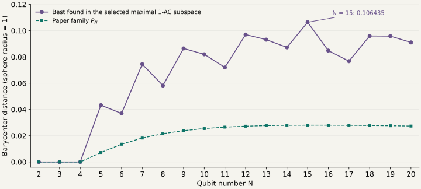

First-order anticoherence · N = 2–20
How far can the Majorana barycenter move?
One specified maximal AC subspace per size. The zero maxima at N = 2, 3, 4 are proved. All other displayed maxima are numerical candidates; exact algebraic constructions certify the candidate states, not their optimality.
We maximize the unweighted centroid distance of unit Majorana stars, counting every multiplicity:
The reflection-pair and central-block constructions specify the search spaces, extending the N = 12 example. At N = 3 the space is the GHZ line. Maximal dimension does not specify a unique subspace: these are not maxima over every possible maximal AC subspace or over all first-order AC states. Every selected analytical basis is included in the source-basis file.

Lines connect computed points as a visual guide. They do not assert monotonicity, an asymptotic law or global optimality.
Results
| N | Dimension k | Best distance | Paper distance | Largest multiplicity | State |
|---|---|---|---|---|---|
| 2 | 1 | 0.000000000000 proved | 0.000000000000 | 1 | Coefficients ↓ |
| 3 | 1 | 0.000000000000 proved | 0.000000000000 | 1 | Coefficients ↓ |
| 4 | 2 | 0.000000000000 proved | 0.000000000000 | 1 | Coefficients ↓ |
| 5 | 2 | 0.043258794512 | 0.007197565192 | 2 | Coefficients ↓ |
| 6 | 3 | 0.036961141151 | 0.013544595448 | 2 | Coefficients ↓ |
| 7 | 3 | 0.074521813701 | 0.018232342468 | 3 | Coefficients ↓ |
| 8 | 3 | 0.058230253147 | 0.021551337220 | 3 | Coefficients ↓ |
| 9 | 4 | 0.086497114014 | 0.023866778776 | 4 | Coefficients ↓ |
| 10 | 4 | 0.082016723626 | 0.025464081342 | 4 | Coefficients ↓ |
| 11 | 4 | 0.072045980727 | 0.026547345091 | 4 | Coefficients ↓ |
| 12 | 5 | 0.097022208372 | 0.027259851726 | 5 | Coefficients ↓ |
| 13 | 5 | 0.093154054781 | 0.027702453808 | 5 | Coefficients ↓ |
| 14 | 5 | 0.087289342036 | 0.027946839658 | 5 | Coefficients ↓ |
| 15 | 6 | 0.106434936845 | 0.028044583305 | 6 | Coefficients ↓ |
| 16 | 6 | 0.084837741453 | 0.028033244810 | 6 | Coefficients ↓ |
| 17 | 6 | 0.076796476342 | 0.027940497610 | 6 | Coefficients ↓ |
| 18 | 7 | 0.095966085970 | 0.027786948998 | 7 | Coefficients ↓ |
| 19 | 7 | 0.095847729789 | 0.027588091553 | 7 | Coefficients ↓ |
| 20 | 7 | 0.091054273604 | 0.027355671042 | 7 | Coefficients ↓ |
What the survey suggests
- Every candidate for N ≥ 5 except N = 6 has one k-fold Majorana point and N − k other points. This is an observed pattern, not a theorem about maximizers.
- N = 6 is an exception: the best candidate has a double point. A triple point in a first-order AC six-qubit state forces a rotated balanced Dicke state, whose barycenter is zero.
- The sequence is non-monotonic. N = 15 gives the largest displacement in this range, about 10.64% of the sphere radius.
- Every candidate for N = 5–20 exceeds the displacement of the paper’s P_N family at the same size.
Comparison with the paper
Section IV.B, Eqs. (35)–(37), of Baguette, Bastin and Martin, Physical Review A 90, 032314 (2014) defines the same barycentric measure and gives
The paper’s family is an example of nonzero barycenters among first-order AC states, not a claim of maximum displacement. Its zero result for every AC state at N ≤ 4 supplies the three proved entries. Its Section III multiplicity obstruction explains the six-qubit exception.
Analytical construction of the candidates
Let the chosen orthonormal subspace basis be v₀,…,vₖ₋₁, with Dicke coefficients Vᵣⱼ. Define its Majorana polynomials and Wronskian:
For each candidate other than N = 6, a selected simple root ζ of W defines the state through cofactors of the first k − 1 derivative rows:
A simple Wronskian root guarantees a nonzero cofactor vector and exactly k-fold vanishing. The full span is first-order AC, so the constructed state is exactly AC. The 15 independent rational-interval certificates isolate the chosen roots and certify their simplicity. They establish an exact algebraic prescription, not global maximality. Two particularly simple root expressions are
For N = 6, an exact radical parameter matches the numerical stationary point:
Use it in the explicit double-root polynomial
Divide each polynomial coefficient by (−1)ʳ√C(6,r), then normalize to obtain the Dicke coefficients. Exact division verifies the factor (z − a)² and excludes a third copy. This radical-parameter state agrees with the numerically optimized stationary value to all 80 saved decimal digits. The exact state construction does not prove optimality.
Numerical searches and independent checks
7,039 new recorded search starts, plus 278 previously completed N = 12 starts, compare unrestricted complex superpositions, several repeated-root manifolds and polar degeneracy strata. Finite Wronskian candidates are evaluated separately. Search failures and a small numerical residual are not optimality proofs. Discarded or interrupted exploratory batches are excluded from these counts and identified in their logs.
Independent 110-digit arithmetic rebuilds all 19 states from their stated subspaces, checks normalization and the one-qubit reduction, reconstructs their homogeneous polynomials from the stars, and recomputes the barycenters. All residuals are below 10⁻⁷⁸. Verification report · Verifier · Exact root certificate reproducer · Full results and provenance.
Explicit state data
Decimals below are previews. High-order repeated roots are sensitive to rounding; use the full-precision downloads or the analytical kernel construction to reproduce the constellation.
N = 2 · k = 1 · d = 0.000000000000
Selected subspace: reflection-pairs-n2-k1-t1.
Full-precision state and search record ↓
| Dicke index r | Real coefficient | Imaginary coefficient |
|---|---|---|
| 1 | +1 | +0 |
N = 3 · k = 1 · d = 0.000000000000
Selected subspace: family46-n3.
Full-precision state and search record ↓
| Dicke index r | Real coefficient | Imaginary coefficient |
|---|---|---|
| 0 | +0.707106781187 | +0 |
| 3 | +0.707106781187 | +0 |
N = 4 · k = 2 · d = 0.000000000000
Selected subspace: reflection-pairs-n4-k2-t1.
Full-precision state and search record ↓
| Dicke index r | Real coefficient | Imaginary coefficient |
|---|---|---|
| 1 | +0.816496580928 | +0 |
| 4 | +0.57735026919 | +0 |
N = 5 · k = 2 · d = 0.043258794512
Selected subspace: reflection-pairs-n5-k2-t1.
Full-precision state and search record ↓
| Dicke index r | Real coefficient | Imaginary coefficient |
|---|---|---|
| 0 | +0.388896599347 | +9.07384200838e-94 |
| 1 | +0.610681907128 | +1.42485975757e-93 |
| 4 | -0.502063350889 | -1.17142796615e-93 |
| 5 | +0.473032171227 | +1.10369162235e-93 |
N = 6 · k = 3 · d = 0.036961141151
Selected subspace: reflection-pairs-n6-k3-t1.
Full-precision state and search record ↓
| Dicke index r | Real coefficient | Imaginary coefficient |
|---|---|---|
| 0 | +0.297215047157 | +6.93470291318e-94 |
| 1 | -0.205863651185 | -4.8032671133e-94 |
| 3 | +0.841739251724 | +1.96396908464e-93 |
| 5 | -0.364012604707 | -8.49324182754e-94 |
| 6 | -0.16808696733 | -3.92185117529e-94 |
N = 7 · k = 3 · d = 0.074521813701
Selected subspace: cyclic-radical-n7-k3-t1.
Full-precision state and search record ↓
| Dicke index r | Real coefficient | Imaginary coefficient |
|---|---|---|
| 0 | -0.151954767658 | -0.158002305724 |
| 1 | +0.505378987881 | +3.06564080522e-93 |
| 2 | -0.199831279302 | -0.239724829932 |
| 3 | -0.0229802792154 | -0.252081759498 |
| 4 | -0.452024708521 | -2.74199249403e-93 |
| 5 | -0.199831279302 | -0.239724829932 |
| 6 | +0.0256927332338 | +0.281835975062 |
| 7 | -0.305624484519 | +0.244618943047 |
N = 8 · k = 3 · d = 0.058230253147
Selected subspace: reflection-pairs-n8-k3-t1.
Full-precision state and search record ↓
| Dicke index r | Real coefficient | Imaginary coefficient |
|---|---|---|
| 1 | +0.42583444406 | +9.93568592168e-94 |
| 2 | -0.407513186295 | -9.50820931573e-94 |
| 4 | +0.519503837609 | +1.21212058761e-93 |
| 6 | -0.521538551424 | -1.21686803763e-93 |
| 7 | -0.332733123292 | -7.76342039704e-94 |
N = 9 · k = 4 · d = 0.086497114014
Selected subspace: central-four-n9-k4-t1.
Full-precision state and search record ↓
| Dicke index r | Real coefficient | Imaginary coefficient |
|---|---|---|
| 0 | -0.0696327745514 | +0.15887341232 |
| 1 | -0.0502467317817 | -0.0242790593655 |
| 2 | +0.249176769675 | -0.273244579286 |
| 3 | +0.581566963489 | -5.43762394479e-92 |
| 4 | +0.0880637805597 | +0.093044164827 |
| 5 | +0.0317788234819 | +0.0153554254083 |
| 6 | +0.321685826404 | -0.352757235006 |
| 7 | -0.450479832859 | +4.21196539622e-92 |
| 8 | +0.139241062967 | +0.147115741921 |
| 9 | +0.00240266970813 | -0.0477281763299 |
N = 10 · k = 4 · d = 0.082016723626
Selected subspace: reflection-pairs-n10-k4-t1.
Full-precision state and search record ↓
| Dicke index r | Real coefficient | Imaginary coefficient |
|---|---|---|
| 0 | +0.313587705709 | -0.237126296595 |
| 1 | +0.547731364309 | +0 |
| 3 | +0.0752798288201 | -0.0583249554053 |
| 4 | +0.00242740493394 | -0.238038435493 |
| 6 | -0.10646175489 | +0.082483942959 |
| 7 | +0.00171643448947 | -0.16831859192 |
| 9 | -0.350601713436 | +0.265115259219 |
| 10 | +0.489905825601 | +0 |
N = 11 · k = 4 · d = 0.072045980727
Selected subspace: reflection-pairs-n11-k4-t1.
Full-precision state and search record ↓
| Dicke index r | Real coefficient | Imaginary coefficient |
|---|---|---|
| 0 | +0.522102213624 | +0 |
| 1 | -0 | -0.435899811808 |
| 3 | +0 | -0.134407491123 |
| 4 | +0.0193365918442 | -0 |
| 7 | -0 | +0.173519324908 |
| 8 | +0.014978059637 | -0 |
| 10 | -0.577205714935 | +0 |
| 11 | -0 | -0.394286215078 |
N = 12 · k = 5 · d = 0.097022208372
Selected subspace: reflection-pairs-n12-k5-t1.
Full-precision state and search record ↓
| Dicke index r | Real coefficient | Imaginary coefficient |
|---|---|---|
| 0 | +0.475478853705 | +0 |
| 1 | +0.0352897393709 | -0.427680244879 |
| 3 | -0.00632831091109 | -0.201601165103 |
| 4 | -0.0543011210223 | +0.096919328088 |
| 6 | +0.0647365280463 | +0.196306761565 |
| 8 | +0.00775056633292 | +0.246909993026 |
| 9 | -0.0443366796552 | +0.0791343000097 |
| 11 | -0.520860987582 | +0 |
| 12 | +0.0322149771699 | -0.390416862532 |
N = 13 · k = 5 · d = 0.093154054781
Selected subspace: central-three-n13-k5-t1.
Full-precision state and search record ↓
| Dicke index r | Real coefficient | Imaginary coefficient |
|---|---|---|
| 0 | +0.120614222366 | -0.360096423208 |
| 1 | +0.502747506697 | +0 |
| 3 | -0.0534130490762 | -0.116367739263 |
| 4 | +0.181678459401 | -0.0155517282614 |
| 5 | -0.172987483423 | -0.0448757118178 |
| 6 | +0.062069717102 | -0.150434766965 |
| 7 | -0.175909411906 | +0.0150578961403 |
| 8 | -0.172987483423 | -0.0448757118178 |
| 9 | -0.0641053281706 | +0.155368359239 |
| 10 | -0.0855813470278 | +0.109417003226 |
| 12 | -0.131121483671 | +0.391466083762 |
| 13 | +0.462460444079 | +0 |
N = 14 · k = 5 · d = 0.087289342036
Selected subspace: reflection-pairs-n14-k5-t1.
Full-precision state and search record ↓
| Dicke index r | Real coefficient | Imaginary coefficient |
|---|---|---|
| 1 | -0.07673726795 | +1.6994950677e-215 |
| 2 | +0.0362781000417 | -9.78831614305e-216 |
| 4 | +0.412845078148 | +0 |
| 5 | -0.400174083752 | +3.11586680796e-215 |
| 7 | +0.540028458083 | +5.5173121118e-215 |
| 9 | -0.505629892142 | +0 |
| 10 | -0.326740771159 | +2.54409459532e-215 |
| 12 | +0.0840614653151 | -1.86170356989e-215 |
| 13 | +0.0331172228938 | -8.93546925257e-216 |
N = 15 · k = 6 · d = 0.106434936845
Selected subspace: central-four-n15-k6-t1.
Full-precision state and search record ↓
| Dicke index r | Real coefficient | Imaginary coefficient |
|---|---|---|
| 0 | -0.286168780638 | -0.233512277551 |
| 1 | +0.489463364919 | +0 |
| 3 | +0.000577668081186 | +0.0731849173076 |
| 4 | -0.17424153306 | -0.192934668294 |
| 5 | -0.0304016613078 | -0.00297894125844 |
| 6 | +0.201561870851 | -0.120306085986 |
| 7 | +0.0585137427658 | +0.0218004849812 |
| 8 | +0.12610676321 | +0.139635861223 |
| 9 | -0.0392483759807 | -0.00384579662776 |
| 10 | -0.156129153807 | +0.0931886934946 |
| 11 | +0.0808483540855 | +0.0301216986931 |
| 12 | +0.100213832577 | -0.196440798796 |
| 14 | +0.307394580451 | +0.250832422838 |
| 15 | +0.45566559469 | +0 |
N = 16 · k = 6 · d = 0.084837741453
Selected subspace: reflection-pairs-n16-k6-t1.
Full-precision state and search record ↓
| Dicke index r | Real coefficient | Imaginary coefficient |
|---|---|---|
| 0 | +0.0504474604889 | +0.212779325061 |
| 1 | -0.0756209834132 | +0.158211677796 |
| 3 | +0.302440660163 | -0.227208310727 |
| 4 | +0.443668491756 | +0 |
| 6 | +0.0823932239297 | -0.077245209023 |
| 7 | +0.000599737383119 | -0.28905577654 |
| 9 | -0.116521614729 | +0.109241222229 |
| 10 | +0.000424078370535 | -0.204393299733 |
| 12 | -0.338138937642 | +0.254026613919 |
| 13 | +0.396829162817 | +0 |
| 15 | -0.0539306037664 | -0.227470666676 |
| 16 | -0.0707369527958 | +0.147993473225 |
N = 17 · k = 6 · d = 0.076796476342
Selected subspace: reflection-pairs-n17-k6-t1.
Full-precision state and search record ↓
| Dicke index r | Real coefficient | Imaginary coefficient |
|---|---|---|
| 0 | +5.30300613353e-107 | +0.209476601716 |
| 1 | +0.280490368917 | -1.91380871782e-106 |
| 3 | +0.415168512849 | +0 |
| 4 | +3.41710075633e-107 | -0.410243686532 |
| 6 | -4.99849461358e-108 | -0.160968017213 |
| 7 | +0.0101998733685 | -1.35520759082e-108 |
| 10 | +6.45302879817e-108 | +0.207808816646 |
| 11 | +0.00790078793793 | -1.04973928598e-108 |
| 13 | -0.45898606063 | +0 |
| 14 | +3.0908839308e-107 | -0.371079376593 |
| 16 | -5.6454811362e-107 | -0.223004871894 |
| 17 | +0.263474823647 | -1.79771026138e-106 |
N = 18 · k = 7 · d = 0.095966085970
Selected subspace: reflection-pairs-n18-k7-t1.
Full-precision state and search record ↓
| Dicke index r | Real coefficient | Imaginary coefficient |
|---|---|---|
| 0 | -0.211565515365 | +0.0438913100636 |
| 1 | -0.0553183017437 | -0.168054214584 |
| 3 | +0.0278745493939 | -0.363184646923 |
| 4 | +0.407663828093 | +0 |
| 6 | +0.0749188515427 | -0.0888653894635 |
| 7 | +0.00869850739757 | +0.297839322397 |
| 9 | +0.0680796742806 | +0.242290098318 |
| 11 | -0.0917564791975 | +0.10883742999 |
| 12 | +0.00710230154929 | +0.243184788403 |
| 14 | -0.0305350389667 | +0.397848847318 |
| 15 | +0.372144457542 | +0 |
| 17 | +0.22439911587 | -0.0465537644717 |
| 18 | -0.0521545950489 | -0.158443032985 |
N = 19 · k = 7 · d = 0.095847729789
Selected subspace: central-three-n19-k7-t1.
Full-precision state and search record ↓
| Dicke index r | Real coefficient | Imaginary coefficient |
|---|---|---|
| 0 | +0.173834781736 | +0.244427803215 |
| 1 | +0.549649367345 | +0 |
| 3 | +0.129124962415 | +0.12542840931 |
| 4 | +0.0828606998645 | -0.00813296775845 |
| 6 | +0.103948490334 | +0.0286258437486 |
| 7 | +0.140925871254 | +0.0105988026888 |
| 8 | -0.0215794176365 | +0.158740896492 |
| 9 | +0.0627769619114 | +0.125050156326 |
| 10 | -0.138774204882 | -0.0104369794044 |
| 11 | -0.0215794176365 | +0.158740896492 |
| 12 | -0.0637503061868 | -0.126989034062 |
| 13 | -0.0775983508118 | +0.0740120069555 |
| 15 | -0.140373633545 | -0.136355056648 |
| 16 | +0.0762207580258 | -0.00748124223621 |
| 18 | -0.183776093863 | -0.258406208801 |
| 19 | +0.519916251322 | +0 |
N = 20 · k = 7 · d = 0.091054273604
Selected subspace: reflection-pairs-n20-k7-t1.
Full-precision state and search record ↓
| Dicke index r | Real coefficient | Imaginary coefficient |
|---|---|---|
| 1 | -0.0437520771887 | -0.150860562679 |
| 2 | +0.0863584559459 | -0.0360887008035 |
| 4 | +0.380286974964 | +0 |
| 5 | +0.0303672923273 | +0.392646308837 |
| 7 | +0.109056178586 | +0.0798046760169 |
| 8 | -0.339566141813 | +0.0345320454585 |
| 10 | -0.279515448748 | +0.102850111478 |
| 12 | -0.133565995417 | -0.0977403676647 |
| 13 | -0.277254593789 | +0.0281952970493 |
| 15 | -0.416583509026 | +0 |
| 16 | +0.0277214183634 | +0.358435400785 |
| 18 | +0.0464060857067 | +0.160011790325 |
| 19 | +0.0814195330829 | -0.0340247534165 |